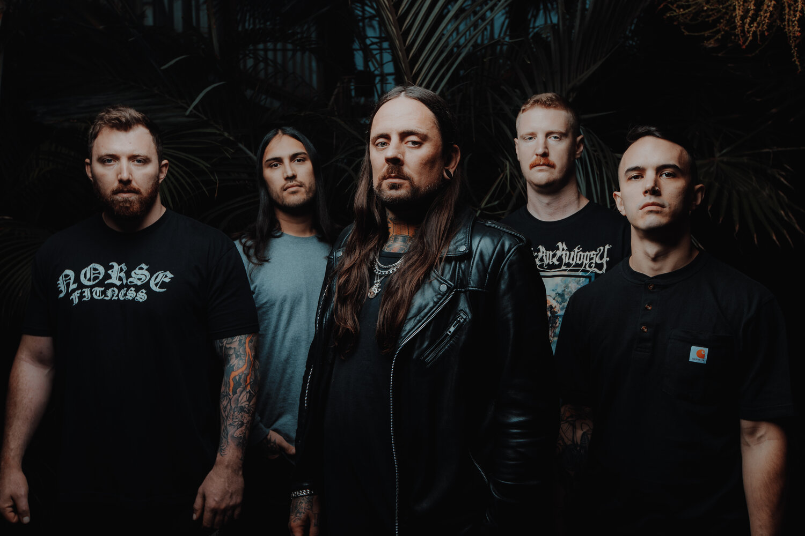
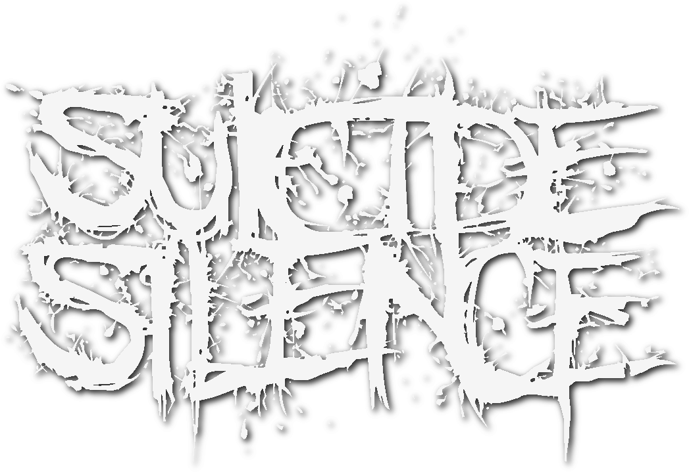
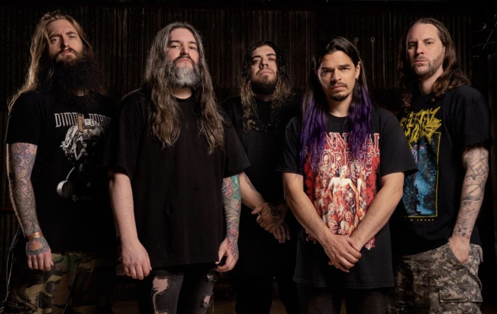

Thy Art Is Murder es una banda proveniente de New South Wales, Sydney, Australia, es una banda de Deathcore que destaca por su sonido extremo y sus líricas que tocan temas de misogínia, anti-religión, asesinatos y violencia, y lo hace de una forma tan cruda y víceral que ha sido motivo de controversia.

El álbum debut de la banda con Century Media, titulado "The Cleansing", fue lanzado en septiembre de 2007 y fue producido por John Travis. El álbum tuvo un impacto significativo en el género, logrando llegar al Top 100 de las listas de Billboard y convirtiéndose en uno de los discos más vendidos de la discográfica.
Slaughter to Prevail se ha descrito principalmente como deathcore, con un enfoque principal en las voces guturales extremadamente profundas de Terrible. Terrible ha mencionado como influencias a Suicide Silence, Bring Me the Horizon y Carnifex. Kostolom marcó un cambio de estilo hacia el nu metalcore, y los críticos notaron la influencia de Slipknot.
Las letras de Slaughter to Prevail están escritas tanto en ruso como en inglés.